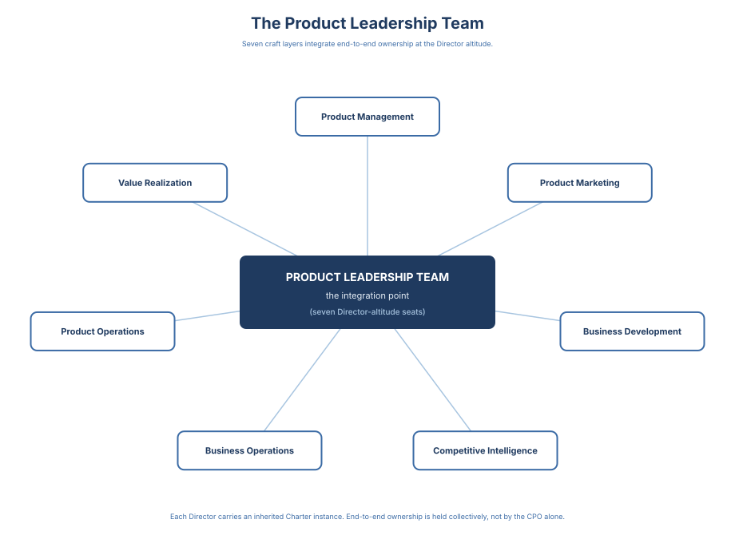

Vision to Value · 3 / 16
Chapter 1: End-to-end Product Organizations
Three months after Project Orion went GA, the exec staff reopened the decision in the room where it had first been made. The CRO walked in with one story of what "ready" had meant. The VP Product walked in with another. The VP CS walked in with a third. The thresholds — CS readiness, pricing pages, the two-week slip if either missed — had been set the previous quarter by the same four people now sitting around the same table, and not one of them could pull the page that named who had agreed to what, against which evidence, on what date. The scope got re-litigated. The pricing assumption got re-litigated. The packaging call the PMM team had quietly closed in week eleven got re-opened by the CFO. The room got through it, but the room did not learn from it — it started over.
The artifact that was missing in that exec staff is the artifact this book is built around. A one-page account of the Orion decision — what was decided, who was accountable, which evidence the decision rested on, who affirmed it after review — would have turned the three-month re-open into a calibration instead of a restart.
That artifact has a name. I call it a decision record throughout this book, and the name is doing a specific job: not "the meeting notes," not "the strategy doc," but the structured account of one decision, sealed at the moment its named owner affirmed it, retained in full when superseded by a later record. A decision record at affirmed is the page the VP Product walks into the next exec staff carrying — the same page everyone else in the room can pull, in the same shape, with the same lifecycle behind it: draft, then reviewed, then affirmed by the named accountable owner.
That is the custodianship the rest of this book is about — and the reason an Orion-style re-litigation, three months out, is no longer the way the organization learns.
When I started writing this book, the kind of record I just described — the one-page Orion account, owned, dated, retrievable three months later — was genuinely hard to produce at the cadence a real product organization moves at. I knew what the artifact should look like. I had written enough of them by hand to know the discipline mattered. What I did not have, and what no product leader I spoke with had, was a way to produce one for every decision worth retaining without paying a labor cost that the work itself never quite justified in the moment.
That changed materially while I was writing this book. The same Product Org OS agents that evolved with the book, or any other AI agents for that matter, are able to draft and affirm such decision records easily. The decision conversation happens; an agent assembles the page in the shape the standard names; the accountable owner reads it, edits it, affirms it.
From Product Role to Product Organization
Modern products operate in environments defined by rapid competition, continuous delivery, and tight coupling between product decisions and business outcomes. No single role, however capable, can manage the full lifecycle alone. The work has outgrown the role.
Product organizations evolved in response. They moved first toward cross-functional agile squads, bringing product, design, and engineering closer together to accelerate execution. That proved insufficient once products began to live or die by positioning, adoption, monetization, and post-launch value realization.
The result is the end-to-end product organization: a system designed to own decisions from strategy through execution and outcomes.
As products and markets grow more complex, the product organization evolves from an individual role into an integrated organizational system that owns the full product lifecycle. This evolution is not about maturity for its own sake. It is a response to reality. Complexity, speed, and competitive pressure force organizations to move from isolated ownership toward integrated decision making.
Why Product Organizations Exist

Products rarely fail because teams cannot execute. They fail because organizations cannot consistently convert intent into outcomes. The bottleneck is not ideas, talent, or delivery speed; it is the ability to make high-quality decisions repeatedly and sustain them across strategy, execution, and go-to-market as conditions change.
Product organizations exist to solve this problem. Their purpose is not to manage backlogs or ship features. It is to turn market understanding, customer insight, and business intent into sustained value. When they succeed, they are the connective tissue between vision and reality. When they fail, execution fragments and value becomes accidental.
Vignette: Project Orion shipped on schedule for three releases. Engineering declared the delivery clean; PMM shipped enablement; Sales pitched Orion as "the enterprise upsell." Two weeks after GA, usage plateaued and retention did not move. CS flagged onboarding friction. Pricing exceptions multiplied because packaging assumptions were never decided. Leadership asked, "Why didn't the launch move the needle?" Everyone did their part; no one owned value end-to-end.
A product organization exists to keep a decision alive from the moment it is framed to the moment its outcome is known.
When it works: strategy and execution reinforce each other; ownership is explicit across the lifecycle; learning compounds instead of resetting.
When it breaks: delivery accelerates while outcomes stagnate; decisions fragment across functions; ownership becomes interpretive rather than structural. This chapter is the foundation the rest of the book stands on: what an end-to-end product organization is, why it is required, and what breaks when it is missing.
The Evolution of Product Organizations
World-class product organizations today are legible only against what came before.
Model 1: Engineering-Led Delivery. In early-stage technology companies, engineering leads product by default. Decisions are made by those who build; speed and feasibility dominate. This works early but does not scale: strategic prioritization is weak, customer understanding is implicit, value creation depends on individual founders.
Model 2: Product as Requirements Management. As companies grow, product management is introduced as an interface. PMs collect requirements, translate stakeholder input, and coordinate delivery. This improves order but not outcomes. Product becomes a service function; strategy lives elsewhere; success depends more on alignment politics than market impact.
Model 3: Cross-Functional Product Teams. Mature organizations form cross-functional teams of product, design, and engineering, accountable for outcomes. This improves learning and customer alignment. But at scale it often breaks down: decisions fragment across teams, go-to-market remains disconnected, accountability becomes partial.
Model 4: End-to-end Product Organizations. World-class product organizations integrate strategy, execution, and go-to-market into a single leadership system with explicit decision ownership and decision flow. End-to-end does not mean Product owns every function. It means someone owns the conversion of intent into outcomes, end-to-end.
What "End-to-end" Actually Means
This diagram defines the scope of end-to-end product ownership. Product leadership is accountable for maintaining continuity from strategic intent through execution, adoption, and sustained outcomes. End-to-end does not imply owning every function, but it does require owning the integrity of the full value loop.
End-to-end is not a slogan. It is a leadership design choice.
Peer Contract: End-to-End Ownership as a Leadership Agreement
End-to-end ownership does not mean Product owns Sales, Marketing, Customer Success, or Engineering. It does not move reporting lines, quota ownership, or functional authority. It means one thing: Product leadership is accountable for the integrity of decisions that span the full value loop, from intent through adoption and outcomes. Peer leaders stay fully accountable for how their own functions execute inside that system.
This only works as a peer contract.
What end-to-end ownership requires from peers:
- Shared success definitions for each strategic bet
- Early, explicit inputs before commitments harden
- Joint participation in go / no-go decisions
- Mutual enforcement of agreed decision boundaries
What end-to-end ownership explicitly does not mean:
- Product does not own revenue quotas, sales execution, or marketing channels
- Product does not approve functional staffing or internal process design
- Product does not override functional expertise or delivery ownership
Finally: peer contracts are frequently multilateral, not bilateral. The hardest operating coordination - launch readiness, platform intake, incident tradeoffs - involves three or four functions at once. In scaled organizations, Product Operations usually holds the pen on these multilateral contracts so the bilateral framing does not fragment into a dozen incompatible agreements.
The peer contract extends across the company boundary. For platform, marketplace, API-first, OEM-embedded, or regulated products, the most consequential peer is external: a platform owner, integration partner, regulated channel, reseller, or systems integrator. The same discipline applies; it is harder to enforce and more expensive to get wrong. Business Development is the function accountable for operating the peer contract across the company boundary on Product's behalf.
The peer contract specifies the what of end-to-end ownership — what each seat owes its peers, what no seat owns alone, where the contract extends across the company boundary. It does not specify the cost of carrying it from any one seat. That cost is altitude pressure, and it is hardest at the layer where the contract is operated most often: the Director layer. The Hardest Evolution sidebar in Chapter 6 names it.
Product commits to:
- Making tradeoffs explicit and time-bound
- Naming a single accountable owner for outcomes
- Owning results, including when decisions miss
- Running re-decisions based on evidence, not politics
A note on roster. Product Marketing is not on the peer roster below, because Product Marketing is inside the product organization, not outside it. Its commitments, positioning, messaging architecture, pricing and packaging, launch narrative, sales enablement readiness, competitive narrative, are internal product work, authored and signed by the Director of Product Marketing. The PMM Charter that instantiates those commitments sits in Appendix C alongside the other internal function charters. The external marketing counterpart to the product organization is the Marketing function, named on the roster below, which runs demand generation, brand, and communications against what Product Marketing has already positioned.
Peers commit to:
- Marketing: demand-generation plan sequenced to the launch window, brand calendar aligned to the launch cadence, communications executed on the PMM-owned narrative rather than a reinterpretation of it, comms readiness confirmed at T-14.
- Customer Success (where federated): onboarding playbook signed off before GA, a named time-to-first-value target for the launch cohort, support-load forecast and staffing plan confirmed at T-14, retention and expansion signal flowing back into the next commitment cycle on a named cadence rather than ad hoc.
- Support: first-response and resolution SLAs named for the launch cohort, known-issues and workaround documentation live at GA, escalation path to Engineering agreed with a triage owner on call, ticket-volume signal returning to Product Management weekly through the first 90 days.
- Engineering: quality bar, rollout plan, rollback plan, and live instrumentation before go; an honest "red" called early rather than a hedged "yellow" called late.
- Sales: ICP discipline at the top of funnel; no custom commitments beyond approved pricing and packaging; deal-level signal fed back as evidence, not as exceptions.
- Finance: margin floor and pricing guardrails named before pricing and packaging lock; unit economics signal returned into the next bet cycle.
- Legal: contract-level constraints surfaced before commitments harden, not after.
A note on Services. Where the product depends on paid implementation, configuration, or professional services for first value, Services holds peer-equivalent commitments: implementation playbooks signed off before GA, statements of work that do not commit the product to custom code paths, and a named handover from Services to Customer Success at the point the customer crosses time-to-first-value. The commitment is that Services does not become a permanent product team by another name.
End-to-end ownership is not a power grab.
It is a leadership agreement to prevent value loss between functions.
Illustrative Interface Example: Launch Readiness Decision: a flagship launch GA date + scope (go / delay / de-scope). Accountable: Product (named Product Director / GM for the bet). Decision forum cadence: weekly Launch Readiness Review from T-6 weeks, final at T-14 days.
Inside the decision (co-deciders from the product organization):
- Product Management: scope and commitment carrying the launch, release-risk tradeoffs, adoption-readiness call.
- Product Marketing: positioning artifact, messaging framework, pricing and packaging constraints, target segment definition, launch narrative, sales enablement readiness (battlecards, discovery guide, demo script, objection handling), competitive narrative. PMM is accountable for these artifacts and co-decides the go / delay / de-scope call alongside Product Management rather than supplying inputs to it.
- Customer Success or Value Realization (where embedded): adoption-readiness judgment, post-launch cadence installed, cohort-level success criteria.
Required inputs from external peers:
- Engineering: quality bar met, rollout + rollback plan, instrumentation live.
- Marketing: demand-generation sequenced, brand calendar aligned, communications executed on the PMM-owned narrative.
- Sales: ICP-aligned pipeline, no out-of-policy commitments, enablement confirmed.
- Business Development (if the launch depends on a partner): partner roadmap alignment, co-sell readiness, partner enablement complete, integration and API dependency status, procurement and compliance gates cleared, partner-side re-decision trigger agreed.
- Support and Services (where the launch carries first-90-days reliability surface or paid implementation respectively): support staffing and SLAs confirmed for the launch cohort; Services time-to-first-value handover to CS named.
Escalation rule: if any required input from an external peer is "red" at T-14, or if the co-deciders inside the product organization cannot reach alignment on go / delay / de-scope at T-14, escalation goes to CPO + CRO within 24 hours; otherwise the accountable Product owner adjudicates the call with the co-deciders in the room.
Success criteria: activation lift, adoption curve, support ticket ceiling, and churn guardrail agreed before launch.
Why End-to-end Requires Multiple Product Professions
End-to-end product leadership cannot be sustained by a single role. No individual can simultaneously hold deep customer understanding, competitive insight, commercial judgment, delivery tradeoffs, adoption dynamics, and operational constraints at scale. Modern product organizations therefore require a set of complementary product professions working as one system. Chapter 3 names the canonical roster and the three-relationships architecture that organizes it; this chapter's remaining job is to name where end-to-end ownership lives inside that roster.
The Product Leadership Team: Where End-to-end Ownership Lives
End-to-end ownership lives at the product leadership team-level, not in individual product managers or teams. It is exercised through peer leadership systems, not command-and-control, and depends on strong counterparts in Engineering, Sales, Marketing, and Customer Success holding each other accountable through shared decisions and explicit interfaces. The Product Leadership Team (PLT)'s canonical composition, cadence, and decision scope are defined in Chapter 3.
In mature organizations, this team is composed of directors, group product managers, and heads of adjacent product functions. Their responsibility is not execution detail but coherence. They are accountable for:
- Holding a shared product strategy
- Making and sequencing portfolio-level bets
- Defining decision boundaries across teams and functions
- Ensuring go-to-market decisions shape product intent early
- Closing feedback loops between outcomes and strategy
This team is the integration layer of the product organization: individual teams execute within defined problem spaces, and the leadership team ensures those efforts add up.
Vignette: In one org, every domain leader had a roadmap, but cross-domain tradeoffs happened only during escalations. The leadership team met weekly, yet acted like a reporting forum-so conflicts reappeared every quarter with higher stakes.
When this leadership layer is weak or unclear, organizations default to one of two failure modes: excessive centralization, where leaders micromanage execution, or excessive decentralization, where teams optimize locally without shared direction.
End-to-end product organizations avoid both by making leadership accountability explicit.
What Changes When the Organization Is End-to-end
Shifting to an end-to-end product organization produces structural changes in how products are built and scaled.
Alignment Between Building and Go-to-market. Go-to-market decisions are present from the start. Positioning, pricing, and adoption dynamics are not afterthoughts; they shape product decisions early. This avoids the failure mode where a product is technically complete but commercially unclear. Product, marketing, and sales leaders validate assumptions together and co-create the story the market will hear.
Stronger Customer Feedback Loops. Customer-facing roles tied to product leadership let insights flow faster, with less distortion. Feedback is neither filtered through layers nor reduced to isolated feature requests. Decisions are informed by real usage, customer sentiment, and market response.
Greater Execution Efficiency. End-to-end ownership reduces handoffs and sequential dependencies. Teams move in parallel rather than waiting for downstream functions; coordination cost does not disappear, but friction is replaced by deliberate alignment. Fewer surprises surface late, and fewer decisions require rework after launch.
Higher Quality Decisions. The most important shift is not speed; it is decision quality. End-to-end organizations concentrate evidence in one place: customer insights, competitive signals, technical constraints, and commercial data. When leadership decisions are required, they rest on shared ground truth rather than fragmented perspectives.
Coherent Messaging Architecture. Product Management and Product Marketing co-decide positioning before build-lock, with Product Marketing owning the positioning artifact and Product Management owning the scope that carries it. Three artifacts then get built in the right order. The positioning statement names who the product is for, what category it competes in, and what makes it credibly different. The messaging framework is the hierarchy that nests from corporate narrative down through campaign copy, sales talk-track, web copy, and in-product language. The launch narrative is the story the market will hear, what it will not hear, and the competitive frame the organization will defend. These survive a launch because they were designed into the product, not retrofitted around it.
The result is a product whose build, positioning, pricing, enablement, and customer experience all tell the same story. The three artifacts do not land because they are written; they land because they enter the Launch Readiness Charter introduced in Chapter 3 as required inputs. Principle 5 — Go-to-market Is a Strategic Choice, Not a Handoff — is the rule; the Charter in Chapter 3 is how the rule gets enforced.
Principle 5 names GTM as a set of decisions with different owners, not one handoff at launch: positioning and messaging owned by PMM, pricing co-decided across Product/PMM/Finance, sales motion co-decided with the CRO, partnership economics co-decided with BD and the CFO. The principle is revisited in Chapter 8 in full.
Stronger Value Realization.
End-to-end ownership produces measurable improvement in the outcomes the product was built to deliver: shorter time-to-value, higher adoption depth, lower early churn, stronger expansion. The organization that owned the build decision also owns the adoption outcome. So an activation shortcut that would damage retention gets caught inside the same leadership system. It does not surface two quarters later as a retention problem nobody owns.
Decision quality has a final adjudicator, and it is not the market, the portfolio, or the leadership team. It is the customer, and the verdict is delivered in behavior and outcome against what was committed. A decision is not high-quality because it was well-framed or well-staffed; it is high-quality when the customer it was made for reaches the value the commitment promised. Shipped is an engineering state. Adopted is a behavioral state. Valued is the customer's verdict, and it is the only state that closes the loop. The function that makes that verdict visible to the rest of the organization, cohort by cohort and bet by bet, is Value Realization. Without it, the decision system runs on self-reported status instead of realized value.
This is the book's titular promise made operational: vision becomes value only when the post-launch lifecycle is designed with the same rigor as the build.
The Primary Outcome: Decision Quality at Scale
At scale, product success is constrained less by talent and more by the organization's ability to make high-quality decisions, repeat them, and sustain them under uncertainty.
End-to-end product organizations function as shared intelligence systems. Customer conversations, usage patterns, operational friction, and win-loss evidence accumulate into a coherent picture. When a decision point arrives, product leadership can frame recommendations that account for customer impact, market timing, feasibility, and business consequences simultaneously. This is why product organizations increasingly influence company-level strategy: they are engines of decision excellence, not merely delivery engines.
Decision Improvability is the scoreboard of a working decision system: the organization's ability to make the same class of decision better this quarter than last, because quality, repeatability, and durability reinforce one another. It is measured not by a single decision but by the trajectory of a class of decisions over a meaningful window. When an organization says "we are good at launch-readiness decisions now," it is claiming Decision Improvability on that class.
Chapter 8 articulates the operating principles that govern how product leaders make decisions when tradeoffs are unavoidable and information is incomplete; the chapters in between (Strategic Process, Structure and Scope, Decision Interfaces, Scaling, Executive Altitude) build the blueprint the principles govern.
Common Anti-Patterns That Break End-to-end Ownership
If you only fix one, fix Anti-Pattern 1. Everyone-owns-everything is the failure mode that compounds fastest and masks itself best - the other four anti-patterns are obvious once you look for them. Anti-Pattern 1 will present as "we're aligned" right up until the re-decision review reveals nobody ever decided.
Anti-Pattern 1: Everyone Owns Everything
Shared responsibility without explicit decision ownership feels collaborative but produces high decision latency and diluted accountability.
Anti-Pattern 2: Product Owns Discovery, Engineering Owns Delivery
Ownership breaks at execution. Teams ship what is feasible, not what matters.
Anti-Pattern 3: Product Owns Roadmaps, Go-to-market Owns Outcomes
Adoption, pricing, and positioning are treated as downstream concerns. Product optimizes for output, not value.
Vignette (continued): the launch review was "green." The checklist was complete: decks, docs, training, release notes. Product marked scope "done" and moved on. But pricing pages contradicted what reps were quoting. The pipeline that arrived was low-intent and discount-driven. Sales blamed message quality; Marketing blamed product value. CS saw churn risk but wasn't in the go/no-go decision. No one could name shared success criteria for week 2, week 6, and quarter 1. So the org argued about execution because the bet was never jointly owned. The launch did not fail at launch. It failed at decision design.
Anti-Pattern 4: Strategy Lives in Leadership Narratives
Strategy exists in decks, not decisions. Teams cannot translate intent into action.
Anti-Pattern 5: PM Craft Bar Drops Quietly as the Team Grows
Roadmaps look full. PRDs get written. Launches ship. But discovery depth narrows, success criteria soften into deliverables, and outcome framing quietly thins. Decision quality degrades not through any single failure but through craft entropy - the slow compression of what "good" means on a growing team. The Director is usually the first to see it and the last to be able to point at a single incident that caused it.
Designing the System When You Don't Own the Org Chart
Most product leaders operate without full org-chart authority over the decisions they are accountable for. A Director of Product Management running a delivery commitment does not directly manage the engineers executing it. A VP Product running a portfolio tradeoff does not directly manage the business-unit heads hosting the portfolio. A CPO running a GTM commitment does not directly manage Sales or Marketing. Even when a product leader is said to "own" a decision, ownership means accountability for the integrity of the decision system across the dimensions this book describes; the person making the call personally may be the VP, the CEO, or the board.
The accountability reaches past the authority in the vast majority of cases. This is the structural condition of product leadership at every altitude, not a special case at one, and the Charter discipline in this book is designed for exactly this condition. The exceptions are the rare cases where product leadership also holds line authority over the executing functions, and those cases are variations on the default rather than the norm the rest of the book departs from.
I use 'altitude' deliberately — the same decision looks different from the CPO seat than from the Director seat, the way the same terrain looks different from 30,000 feet than from 3,000.
End-to-end ownership does not require owning the org chart. It requires designing the decision system the org chart operates within. If you are newly-seated and the install is ahead of you, Appendix A walks the first ninety days as a sequence: one Charter in the first thirty days, cadence and observability by Day 60, the first re-decision by Day 90.
Authority Follows Clarity. Authority is not granted upfront; it accumulates. Product leaders gain it when they make tradeoffs explicit, surface risks early, frame decisions in business terms peers care about, and demonstrate that clarity improves speed rather than control.
Leaders who wait for formal authority before designing decision boundaries never get it. Leaders who design clarity first find authority following. The hardest version of this discipline, taken up in Principle 5 in Chapter 8, is the decision you own by staying silent. It is the one you carry past the launch into the years that follow.
What You Can Design Without Structural Control
Even without reporting-line ownership, senior product leaders can design four things that change behavior without changing boxes on a slide.
Decision interfaces. Define which inputs are required before commitments harden and where escalation is expected vs. discouraged. Success definitions. Insist that every strategic bet has one shared success definition across Product, Engineering, and GTM. Decision cadence. Shift leadership forums from status reporting to tradeoff resolution, even if the attendee list is unchanged. Decision records. Make it normal that major decisions are written down, revisited, and re-decided on outcomes.
Managing Up Is System Design, Not Politics. Managing upward is not persuasion; it is reframing conversations from opinions to decisions. Effective upward influence sounds like:
- "This decision is currently unowned. Here is the cost."
- "We are treating this as execution, but it is a portfolio tradeoff."
- "We have commitments without success criteria. Do we want to harden them anyway?"
- "If this assumption proves false, here is when we re-decide."
The same move scales downward to the PM who has inherited a roadmap, pricing decision, or GTM motion they would not have chosen. Your leverage is not to reopen the decision; you may not have the standing. Your leverage is to make the re-decision triggers explicit before execution begins: the evidence that would force a reopen, the metric that would call it, the forum where it would be raised. A commitment you disagree with but whose re-decision triggers you designed is a commitment you can work inside without your integrity paying the bill. These statements depersonalize tension; they move disagreement out of status and into structure.
Decision Systems Translate Upward.
A senior product leader spends a meaningful share of time translating product reality into board-level narrative and translating board expectations into teachable decision constraints. Neither direction is optional, and every handoff between altitudes is a decision artifact, not a status update. Chapter 7 takes the full argument - how the CPO designs the interfaces with the CEO, the board, the CFO, the General Counsel, and the COO so that the translation compounds trust rather than reopening strategy every cycle.
When End-to-End Ownership Is Partial. In many organizations, product leaders own only part of the value loop initially. That is acceptable as long as the gap is explicit. Partial ownership becomes dangerous when responsibility is implied but not designed, decisions harden without shared agreement, or outcomes are reviewed without revisiting the original tradeoffs. Clarity about what you do not own is as important as clarity about what you do.
The Goal Is Not Control. It Is Continuity. End-to-end product leadership is not centralization; it is continuity from intent to outcomes. When continuity is designed, organizations learn. When it is not, they relitigate. This book assumes agency, not because authority is guaranteed, but because leadership begins by designing the system you wish existed, then proving it works.
Why This Chapter Comes First
Most product books start with discovery, prioritization, or delivery techniques. This book starts with organizational design, because structure determines whether any technique survives contact with reality. Without end-to-end ownership, every product practice becomes a local optimization inside a broken system.
Quick Recap and Next Moves
Fragmented ownership is the default. End-to-end accountability must be designed; it is never inherited.
Ask:
- Where does ownership break today?
- Which decisions feel slow or unclear?
- Who owns outcomes, not just delivery?
- Where does go-to-market override product intent instead of shaping it?
The Eight Operating Principles, in name only. Eight operating principles run through this book as invariants — what must hold true regardless of altitude, stage, or sector. They are: (1) End-to-end Ownership Is Non-Negotiable, (2) Strategy Precedes Structure, (3) Product Leadership Is About Decision Quality, (4) Alignment Beats Consensus, (5) Go-to-market Is a Strategic Choice, Not a Handoff, (6) Execution Is a Leadership Discipline, (7) Scale Changes the Nature of the Work, and (8) Organizations Learn Through Outcomes. The chapters that follow expand each principle inline where the chapter relies on it, in the language and at the altitude of that chapter's work. Chapter 8 then revisits all eight together, in light of the decision system the preceding chapters have built. A reader who wants the principles before the operational chapters can jump to Chapter 8; the chapters in between assume the reader will meet each principle when its work needs it.
What this chapter has named is the seat and the inheritance the seat carries; Chapter 2 turns to the work the seat actually does — how strategic decisions move through the organization, level by level, from intent to outcome.
Vision to Value Toolkit (Chapter 1)
Diagnosing the End-to-end Product Organization
Purpose: assess whether you actually have an end-to-end product organization, or just a collection of adjacent roles with fragmented ownership. This toolkit covers structure, scope, ownership, and interfaces; decision quality is treated in Chapter 8 (Principle 3), with the operational mechanics in Chapters 2–4.
End-to-end Ownership Check
Answer honestly:
- Who owns problem framing?
- Who owns market sensing (competitor moves, category dynamics, substitutes, win/loss signal)?
- Who owns solution definition?
- Who owns delivery tradeoffs?
- Who owns go-to-market readiness?
- Who owns post-launch adoption and value realization?
If ownership changes hands more than once across these stages, you do not have end-to-end ownership - you have a relay race.
Red flag: "Product hands off to marketing at launch" "Customer success is downstream and reactive" "Pricing decisions happen outside the product org"
Product Org Scope Map
List which of the following roles sit inside the product organization, not merely "collaborate with it". This list mirrors the canonical roster in Chapter 3; use it here as a diagnostic checklist for your own organization:
- Product Management
- Product Marketing
- Business Development
- Product Design and UX (with embedded user research as a contributing input, not a separate seat)
- Competitive Intelligence / Market Insights
- Business Operations (Product) - the business sensor inside the product organization; owns P&L hygiene, booking-data hygiene, GTM push through sales systems, product-initiative-to-business tracking, and portfolio-review pre-reads.
- Product Operations - owns the product operating layer: forum design, cadence integrity, instrumentation, decision record hygiene, launch readiness, platform intake, portfolio reviews.
- Value Realization / Customer Success
Then ask:
- Are these roles accountable to product leadership, or just matrixed?
- Do they share common goals and incentives?
End-to-end ownership requires authority, not just proximity.
Boundaries to Know. Two functions read as product-adjacent and are routinely confused with product-org seats. They are not inside the product organization. Revenue Operations owns the commercial operating layer (pipeline cadence, quota rituals, compensation plan hygiene, forecast integrity) and is a peer to Product Operations, not a synonym; conflating them creates organizational pain because the artifacts they own differ. Data and Analytics sits as an enterprise peer in the post-scale frame this book operates in; see the Chapter 3 sidebar for the scale-dependent variants.
Go-to-market Integration Test
For your last major launch:
- Was positioning defined before development locked?
- Were pricing and packaging assumptions validated early?
- Did sales enablement lag the product - or co-evolve with it?
- Was positioning defined against the alternatives and substitutes the buyer actually considers - or only against an internal view of the product?
If go-to-market decisions consistently arrive late, your org is structurally downstream-biased.
Customer Signal Flow
Trace how customer signals move:
- From sales conversations
- From onboarding friction
- From support and success teams
- From usage and outcome data
Ask:
- Do these signals converge in one place?
- Or do they fragment across tools, decks, and anecdotes?
An end-to-end product org acts as a signal concentrator, not a signal router.
Market Signal Flow
Trace how market signals move:
- From competitor releases, pricing moves, and packaging changes
- From analyst coverage and category definition shifts
- From win/loss and lost-deal reasons
- From substitutes and new entrants reframing what the buyer compares you to
Ask:
- Do these signals converge in one place, or do they live in slides, anecdotes, and individual heads?
- Is there a named owner for market sensing, or does the org read the market only when it is forced to?
Customer signal without market signal optimizes the inside of a picture whose frame is moving.
Leadership Team Reality Check
Look at the product leadership team (usually Directors / Group PMs):
- Do they collectively own strategy, execution, and outcomes?
- Or are some leaders "strategy-only" and others "delivery-only"?
Anti-pattern: Senior product leaders who own parts of the lifecycle but not the whole.